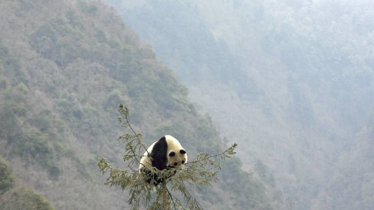

Le panda géant

Le panda géant ou grand panda appelé panda, est un mammifère de l’ordre des carnassiers et de la famille des ours, classé dans le sous-groupe Ailuropidae.
| Poids | 80 à 125 kg |
| Longueur queue | 1,50 à 1,80 m |
| Vitesse | Environ 20 mètre / heure |
| Caractéristiques du corps | Fourrure épaisse |
| Couleur du pelage/fourrure | Fourrure noire et blanche ; Pelage blanc avec taches noire unique ; Taches noires autour des yeux et oreilles ; Pattes noires ; Bande noire autour des épaules |
| Bruit/Cri | Bêlement |
| Régime alimentaire/ Type de nourriture | Se nourrit principalement de bambou |
| Vie sociale | Animal solitaire mais supporte bien la compagnie |
| Prédateurs | Le léopard ; Le dhole ; L'ours brun ; le tigre ; La panthère ; L'Homme ! |
| Nom femelle ; Nom du petit | Le panda femelle ; bébé panda |
| Maturité sexuelle | 4 ans : femelle ; 6 ans : mâle |
| Durée de vie | 20 ans : état sauvage |
Aujourd'hui, le panda géant est en voie de disparition mais depuis 2000, sont nombres d'individus à augmenté de 200.
Braconnage, exploitation forestière et déforestation massive, conversion des forêts en terres agricoles, expansion des villes, développement effréné de la population chinoise et des activités de développement associées sont les maux qui ont conduit les derniers pandas sauvages à se réfugier dans un habitat en recul et fragmenté.
Dans les années 1980, ils ne restaient plus que 1 114 pandas à l'état sauvage en Chine. Dans les années 2000, ils étaient 1 600 environ. Aujourd'hui, ils sont 1 864 dans le monde grâce aux efforts de conservation déployés sur son aire de répartition !
Il y a des solutions pour éviter que le panda géant ne disparaise mais pour cela, le gourvernement et les habitants de différents pays doivent faire un ensemble d'actions :
Aujourd'hui, de nombreuses personnes sont mobilisées pour éviter que le panda géant ne dissparaisent. Il existe donc de nombreuses associations qui défendent celui-ci comme :
Il existe d'autres associations qui essaient de préserver et sauver ces magnifiques pandas.